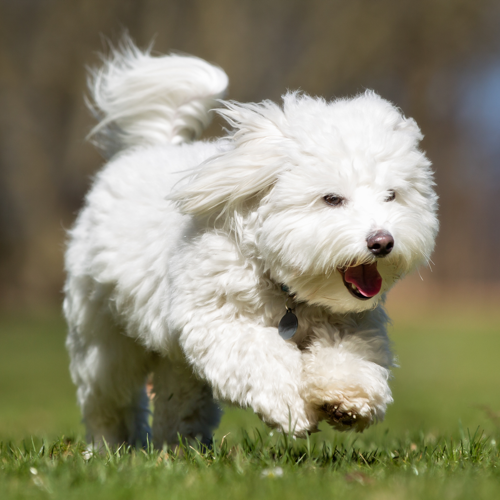

Meet Sariah!

Sariah is the matron of the family. She's not afraid to break up fights and keep the others in line, although she's not opposed to having some fun every now and then too. She LOVES to run around in the sprinklers. Cotons are naturally water friendly. They were bred to be a sailor's dog and have a natural kinship to the water. They are fiercly loyal animals and will follow their favorite person around the house, as Sariah does with me. Sariah is the matron of the family. She's not afraid to break up fights and keep the others in line, although she's not opposed to having some fun every now and then. She LOVES to run around in the sprinklers. Cotons are naturally water friendly. They were bred to be a sailor's dog and have a natural kinship to the water. They are fiercly loyal animals and will follow their favorite person around the house, as Sariah does with me. Sariah is the matron of the family. She's not afraid to break up fights and keep the others in line, although she's not opposed to having some fun every now and then. She LOVES to run around in the sprinklers. Cotons are naturally water friendly. They were bred to be a sailor's dog and have a natural kinship to the water. They are fiercly loyal animals and will follow their favorite person around the house, as Sariah does with me. Sariah is the matron of the family. She's not afraid to break up fights and keep the others in line, although she's not opposed to having some fun every now and then. She LOVES to run around in the sprinklers. Cotons are naturally water friendly. They were bred to be a sailor's dog and have a natural kinship to the water. They are fiercly loyal animals and will follow their favorite person around the house, as Sariah does with me. Sariah is the matron of the family. She's not afraid to break up fights and keep the others in line, although she's not opposed to having some fun every now and then. She LOVES to run around in the sprinklers. Cotons are naturally water friendly. They were bred to be a sailor's dog and have a natural kinship to the water. They are fiercly loyal animals and will follow their favorite person around the house, as Sariah does with me.
Strong Points
- Affection and sensibility
- Good with cats, other dogs, novice owners, seniors, and apartment living
- Low shedding level
- Low drool-prone dog
- High playfulness ability
Weak Points
- Suffer from separation anxiety if left on their own
- High grooming needs
- High Bathing needs
- Under average physical abilities
The Coton de Tulear, “Royal Dog of Madagascar,” is a bright, happy-go-lucky companion dog whose favorite activities include clowning, cavorting, and following their special human around the house. The Coton is small but robustly sturdy. The Coton de Tulear, “Royal Dog of Madagascar,” is a bright, happy-go-lucky companion dog whose favorite activities include clowning, cavorting, and following their special human around the house. The Coton is small but robustly sturdy.